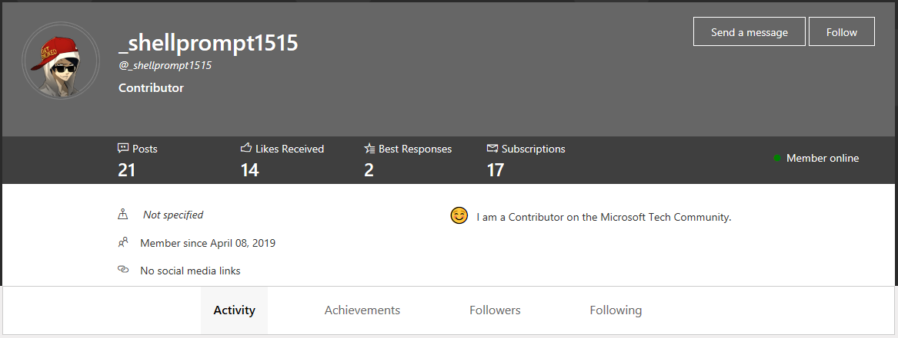

About Me:
I am a sophomore student studying at the University Of Georgia, currently seeking a Bachelors of Science in Psychology. I enjoy swimming, programming and tinkering with computers in my free time. If there is one thing in the world I wish existed it would be new battery technology. Li-Po needs to go.
Education
- High School Diploma - Cherokee High School
- May 2017
- Bachelors Of Science - University Of Georgia
- Expected May 2020, Major - Psychology
Skills & Abilities
- Communication - I can communicate well with people one on one or in large groups. I can also deliver presentations and speeches excellently with or without preparation.
- Leadership - I co-founded my High School’s FBLA (Future Business Leaders of America) chapter alongside my friends and maintained leadership positions during my years in the club.
- Practicality - When time is of the essence and things are at stake, I am quick to resolve the situation and implement a functional solution.
- Secondary Languages - German, Spanish
- Technological knowledge - Windows/MacOS/Linux familiarity, knowledge of HTML + CSS, Python
Work Experience
- Oct 2018 - Current | Telephone Grassroots Advocate | Nextwave Advocacy LLC
Volunteering & Extracurriculars
- 1st Chair Clarinet | CHS Marching And Symphonic Band | 2013 – 2015
- Co-Founder/Secretary | FBLA - CHS Chapter | 2015 – 2016
- Member | CHS Beta Club | 2015 – 2016
- Volunteer | Canton Elementary Fallfest | 2016
- Treasurer | FBLA - CHS Chapter | 2016 – 2017
- Member | Spanish Honor Society | 2016 - 2017
- Volunteer | CHS Technology Fair | April 2017
Other Tidbits
- I love to repair old electronics.
- I have skydived before
, and will do it again. - I have won the lottery before. Only $100, but better than nothing.
My favorite genre of music is Eurobeat, of which you can listen to an excellent mix of here.
You can also find me on the Microsoft techcommunity:
Contact:
I can be contacted by phone (678)-526-3537 at any of these days and times.
| Sunday | All Day |
| Monday | After 2 PM |
| Tuesday | After 4 PM |
| Wednesday | After 2 PM |
| Thursday | After 4 PM |
| Friday | All Day |
| Saturday | All Day |